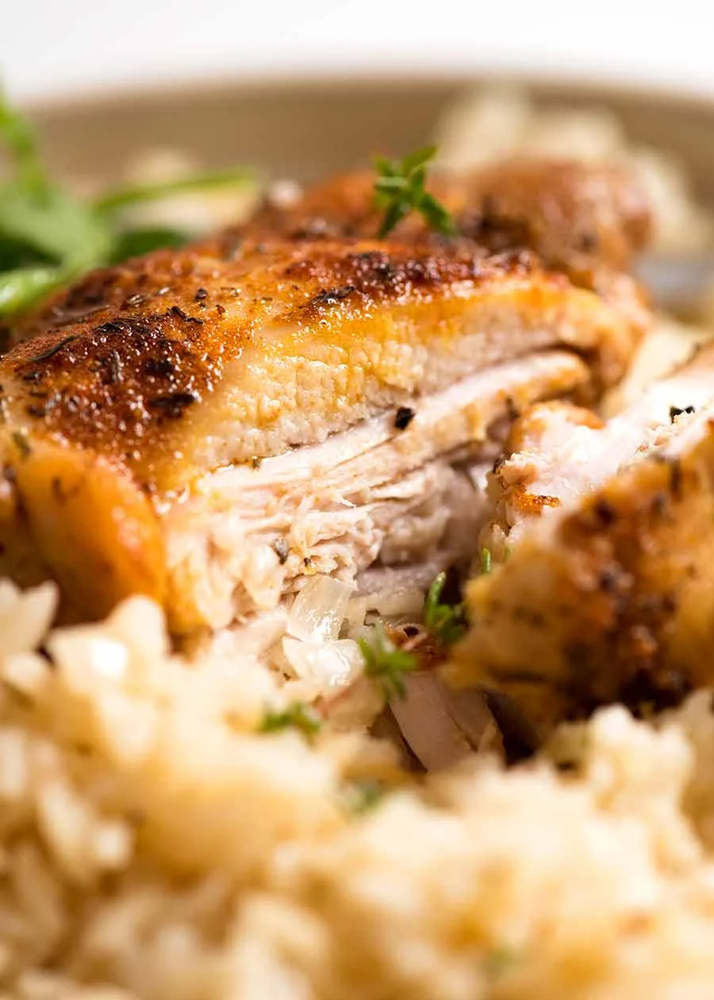

Chicken and Rice
Image of completed chicken and rice
Chicken and rice is one of the easiest and tastiest meals that you can make.
It has very few ingredients, and is also very inexpensive. You can feed your
entire family with this meal.
Ingredients
- 5 bone in chicken thigh fillets, peel skin OFF
- 1 onion, chopped
- 2 large garlic cloves
- 2 tbsp butter
- 1 1/2 cups uncooked white rice
- 1 1/2 cups chicken broth
- 1 1/4 cups water
- 1 tsp paprika
- 1 tsp thyme
- 1/2 tsp garlic powder
- 1/2 tsp onion powder
- 3/4 tsp salt
- A pinch of black pepper
Steps
- Preheat oven to 350°F.
- Scatter onion and garlic in a baking dish (about 10 x 15" / 25 x 35 cm), then place butter in the centre. Bake for 15 minutes (check at 12 minutes, mix if some bits are browning too much).
- Mix together seasonings. Rub in on both sides of the chicken.
- Remove baking dish. Add rice then mix.
- Place chicken on rice. Pour chicken broth and water around the chicken.
- Cover with foil and bake for 30 minutes. Remove foil, spray chicken with oil, then bake for a further 20 minutes until liquid is absorbed.
- Stand for 5 minutes, then remove chicken and fluff up rice. Garnish with parsley or thyme, and enjoy!
Return home